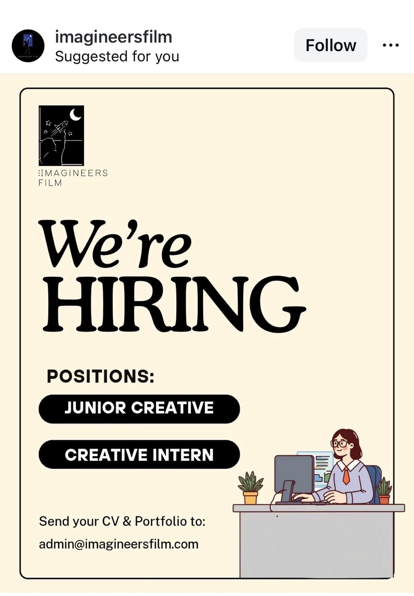

Snapshot & assessment for Maia
Roles identified: Junior Creative; Creative Intern.
This is one of the cleaner fit items in the batch because the roles are explicitly creative and early-career. It lacks the institutional credibility of bigger names, but it may be more directly relevant to Maia’s actual lane than some stronger brands with weaker role fit.
Why it fits: direct creative role titles, portfolio-based application, early-career framing.
Main challenge: company quality, scale, and practical details remain under-verified.
Recommended action: keep visible as a promising creative lead while further verification catches up.
Company mini-profile
Imagineers Film appears to be a film or creative-media company offering directly creative junior roles. Even without full verification, that makes it more interesting for Maia than a lot of generic communications or admin postings.
Source links
Role details
- Roles: Junior Creative; Creative Intern
- Location: Unclear
- Mode: Unclear
- Duration: Unclear
- Compensation: Unclear
- Application method: Email CV and portfolio to admin@imagineersfilm.com
- Materials requested: CV and portfolio
Assessment for Maia
This belongs on the site because it surfaces a direct creative opening that could easily get lost if we over-filter for prestige too early. It still needs better verification, but the role framing alone is strong enough to justify visibility.